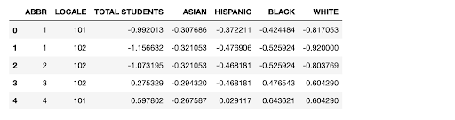

The table below is how our processed data looks like before it is used to train our model. We have used encoding to code categorical variables and scaler methods to normalize the numerical variables to reduce bias in our prediction.
The table below shows the accuracy of our models under different parameters. Based on these accuracy stats, we have trained a KNN model with 15 neighbors and Minkowski metric on the training data. This trained model will be used to predict a school’s poverty status in our web application.

We have labeled the schools into 3 categories: 0, 1, and 2 based on whether a school has less than national average proportion of students eligible for free lunch (0), higher than average proportion of students eligible for free lunch (1), or higher than 75th percentile of the proportion of students eligible for free lunch (2). The graph below shows the proportion of schools labeled by each category and grouped by the locale of the school. Schools labeled 2 would need to be prioritized for Title I eligibility and our machine learning model is trained to predict if a school falls under one of these three categories.
 The Solution
The Solution